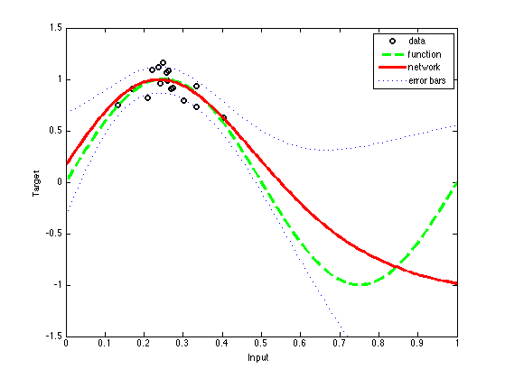
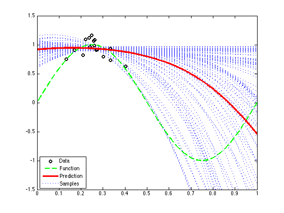

Mulitlayer Perceptron HMC Regression Demo
Based on Netlan's DEMHMC3 We modified the code so the model is as similar as possible to the one in demev1, so we can compare MCMC with Laplace approx
Contents
Create the data and do EB on the network
% This file is from pmtk3.googlecode.com mlpRegEvidenceDemo; % use the EB hyper-params alpha = net.alpha; beta = net.beta; % Create and initialize fresh network model. % Initialise weights reasonably close to 0 net = mlp(nin, nhidden, nout, 'linear', alpha, beta); net = mlpinit(net, 10); % Set up vector of options for hybrid Monte Carlo. nsamples = 100; % Number of retained samples. options = foptions; % Default options vector. options(1) = 1; % Switch on diagnostics. options(5) = 1; % Use persistence options(7) = 10; % Number of steps in trajectory. options(14) = nsamples; % Number of Monte Carlo samples returned. options(15) = 300; % Number of samples omitted at start of chain. options(17) = 0.95; % Alpha value in persistence options(18) = 0.005; % Step size. w = mlppak(net); % Initialise HMC hmc('state', 42); [samples, energies] = hmc('neterr', w, options, 'netgrad', net, x, t); disp('The plot shows the underlying noise free function, the 100 samples') disp('produced from the MLP, and their average as a Monte Carlo estimate') disp('of the true posterior average.') disp(' ') nplot = 300; plotvals = [0 : 1/(nplot - 1) : 1]'; pred = zeros(size(plotvals)); fh1 = figure; hold on for k = 1:nsamples w2 = samples(k,:); net2 = mlpunpak(net, w2); y = mlpfwd(net2, plotvals); % Sum predictions pred = pred + y; h4 = plot(plotvals, y, ':b', 'LineWidth', 1); end pred = pred./nsamples; % Plot data h1 = plot(x, t, 'ok', 'LineWidth', 2); %axis([0 1 -3 3]) axis([0 1 -1.5 1.5]) % Plot function [fx, fy] = fplot('sin(2*pi*x)', [0 1], '--g'); h2 = plot(fx, fy, '--g', 'LineWidth', 2); set(gca, 'box', 'on'); % Plot averaged prediction h3 = plot(plotvals, pred, '-r', 'LineWidth', 3); lstrings = char('Data', 'Function', 'Prediction', 'Samples'); legend([h1 h2 h3 h4], lstrings, 3); hold off disp('Note how the predictions become much further from the true function') disp('away from the region of high data density.') printPmtkFigure('mlpRegHmc')
This demonstration illustrates the application of Bayesian re-estimation to determine the hyperparameters in a simple regression problem. It is based on a local quadratic approximation to a mode of the posterior distribution and the evidence maximization framework of MacKay. First, we generate a synthetic data set consisting of a single input variable x sampled from a Gaussian distribution, and a target variable t obtained by evaluating sin(2*pi*x) and adding Gaussian noise. Next we create a two-layer MLP network having 3 hidden units and one linear output. The model assumes Gaussian target noise governed by an inverse variance hyperparmeter beta, and uses a simple Gaussian prior distribution governed by an inverse variance hyperparameter alpha. The network weights and the hyperparameters are initialised and then the weights are optimized with the scaled conjugate gradient algorithm using the SCG function, with the hyperparameters kept fixed. After a maximum of 500 iterations, the hyperparameters are re-estimated using the EVIDENCE function. The process of optimizing the weights with fixed hyperparameters and then re-estimating the hyperparameters is repeated for a total of 3 cycles. Cycle 1 Error 8.089982 Scale 1.000000e+00 Cycle 2 Error 8.058461 Scale 5.000000e-01 Cycle 3 Error 8.058461 Scale 2.500000e-01 Cycle 4 Error 8.058461 Scale 1.000000e+00 Cycle 5 Error 7.940710 Scale 4.000000e+00 Cycle 6 Error 7.935986 Scale 2.000000e+00 Cycle 7 Error 7.856725 Scale 1.000000e+00 Cycle 8 Error 7.848976 Scale 5.000000e-01 Cycle 9 Error 7.848189 Scale 2.500000e-01 Cycle 10 Error 7.846595 Scale 1.250000e-01 Cycle 11 Error 7.846337 Scale 6.250000e-02 Cycle 12 Error 7.845577 Scale 3.125000e-02 Cycle 13 Error 7.845490 Scale 1.562500e-02 Cycle 14 Error 7.678913 Scale 7.812500e-03 Cycle 15 Error 7.392927 Scale 3.906250e-03 Cycle 16 Error 7.318061 Scale 1.953125e-03 Cycle 17 Error 7.310427 Scale 9.765625e-04 Cycle 18 Error 7.310427 Scale 4.882812e-04 Cycle 19 Error 7.310427 Scale 1.953125e-03 Cycle 20 Error 7.310427 Scale 7.812500e-03 Cycle 21 Error 7.310427 Scale 3.125000e-02 Cycle 22 Error 7.310427 Scale 1.250000e-01 Cycle 23 Error 7.183774 Scale 5.000000e-01 Cycle 24 Error 7.178550 Scale 2.500000e-01 Cycle 25 Error 7.111295 Scale 1.250000e-01 Cycle 26 Error 7.111295 Scale 6.250000e-02 Cycle 27 Error 7.111295 Scale 2.500000e-01 Cycle 28 Error 7.111295 Scale 1.000000e+00 Cycle 29 Error 6.781937 Scale 4.000000e+00 Cycle 30 Error 6.701043 Scale 2.000000e+00 Cycle 31 Error 6.699761 Scale 1.000000e+00 Cycle 32 Error 6.649371 Scale 5.000000e-01 Cycle 33 Error 6.646181 Scale 2.500000e-01 Cycle 34 Error 6.586370 Scale 1.250000e-01 Cycle 35 Error 6.584797 Scale 6.250000e-02 Cycle 36 Error 6.584797 Scale 3.125000e-02 Cycle 37 Error 6.584797 Scale 1.250000e-01 Cycle 38 Error 6.584797 Scale 5.000000e-01 Cycle 39 Error 6.350049 Scale 2.000000e+00 Cycle 40 Error 6.249683 Scale 1.000000e+00 Cycle 41 Error 6.188934 Scale 5.000000e-01 Cycle 42 Error 5.999971 Scale 2.500000e-01 Cycle 43 Error 5.989298 Scale 1.250000e-01 Cycle 44 Error 5.986483 Scale 6.250000e-02 Cycle 45 Error 5.942077 Scale 3.125000e-02 Cycle 46 Error 5.940286 Scale 1.562500e-02 Cycle 47 Error 5.940286 Scale 7.812500e-03 Cycle 48 Error 5.940286 Scale 3.125000e-02 Cycle 49 Error 5.940286 Scale 1.250000e-01 Cycle 50 Error 5.940286 Scale 5.000000e-01 Cycle 51 Error 5.651945 Scale 2.000000e+00 Cycle 52 Error 5.602062 Scale 1.000000e+00 Cycle 53 Error 5.602062 Scale 5.000000e-01 Cycle 54 Error 5.277278 Scale 2.000000e+00 Cycle 55 Error 5.065083 Scale 1.000000e+00 Cycle 56 Error 4.937769 Scale 5.000000e-01 Cycle 57 Error 4.556736 Scale 5.000000e-01 Cycle 58 Error 4.186977 Scale 2.500000e-01 Cycle 59 Error 4.179943 Scale 1.250000e-01 Cycle 60 Error 4.173327 Scale 6.250000e-02 Cycle 61 Error 4.136021 Scale 3.125000e-02 Cycle 62 Error 4.056404 Scale 1.562500e-02 Cycle 63 Error 3.927565 Scale 7.812500e-03 Cycle 64 Error 3.924966 Scale 3.906250e-03 Cycle 65 Error 3.923877 Scale 1.953125e-03 Cycle 66 Error 3.922141 Scale 9.765625e-04 Cycle 67 Error 3.920979 Scale 4.882812e-04 Cycle 68 Error 3.919021 Scale 2.441406e-04 Cycle 69 Error 3.918295 Scale 1.220703e-04 Cycle 70 Error 3.909528 Scale 6.103516e-05 Cycle 71 Error 3.853103 Scale 3.051758e-05 Cycle 72 Error 3.853094 Scale 3.051758e-05 Cycle 73 Error 3.823312 Scale 1.525879e-05 Cycle 74 Error 3.815046 Scale 7.629395e-06 Cycle 75 Error 3.812243 Scale 3.814697e-06 Cycle 76 Error 3.811711 Scale 1.907349e-06 Cycle 77 Error 3.811588 Scale 9.536743e-07 Cycle 78 Error 3.811380 Scale 4.768372e-07 Cycle 79 Error 3.811327 Scale 2.384186e-07 Cycle 80 Error 3.791296 Scale 1.192093e-07 Cycle 81 Error 3.787431 Scale 5.960464e-08 Cycle 82 Error 3.771530 Scale 2.980232e-08 Cycle 83 Error 3.771506 Scale 1.490116e-08 Cycle 84 Error 3.768559 Scale 7.450581e-09 Cycle 85 Error 3.767752 Scale 3.725290e-09 Cycle 86 Error 3.695527 Scale 1.862645e-09 Cycle 87 Error 3.693524 Scale 9.313226e-10 Cycle 88 Error 3.678790 Scale 4.656613e-10 Cycle 89 Error 3.676897 Scale 2.328306e-10 Cycle 90 Error 3.671214 Scale 1.164153e-10 Cycle 91 Error 3.665799 Scale 5.820766e-11 Cycle 92 Error 3.654960 Scale 2.910383e-11 Cycle 93 Error 3.652732 Scale 1.455192e-11 Cycle 94 Error 3.649398 Scale 7.275958e-12 Cycle 95 Error 3.641051 Scale 3.637979e-12 Cycle 96 Error 3.637215 Scale 1.818989e-12 Cycle 97 Error 3.636102 Scale 9.094947e-13 Cycle 98 Error 3.635912 Scale 4.547474e-13 Cycle 99 Error 3.635771 Scale 2.273737e-13 Cycle 100 Error 3.634755 Scale 1.136868e-13 Cycle 101 Error 3.634731 Scale 5.684342e-14 Cycle 102 Error 3.634338 Scale 2.842171e-14 Cycle 103 Error 3.633403 Scale 1.421085e-14 Cycle 104 Error 3.633393 Scale 7.105427e-15 Cycle 105 Error 3.631085 Scale 3.552714e-15 Cycle 106 Error 3.626745 Scale 1.776357e-15 Cycle 107 Error 3.624641 Scale 1.776357e-15 Cycle 108 Error 3.618667 Scale 1.000000e-15 Cycle 109 Error 3.618384 Scale 1.000000e-15 Cycle 110 Error 3.618301 Scale 1.000000e-15 Cycle 111 Error 3.617710 Scale 1.000000e-15 Cycle 112 Error 3.617707 Scale 1.000000e-15 Cycle 113 Error 3.617698 Scale 1.000000e-15 Cycle 114 Error 3.617678 Scale 1.000000e-15 Cycle 115 Error 3.617678 Scale 1.000000e-15 Cycle 116 Error 3.617678 Scale 4.000000e-15 Cycle 117 Error 3.617678 Scale 1.600000e-14 Cycle 118 Error 3.617678 Scale 6.400000e-14 Cycle 119 Error 3.617678 Scale 2.560000e-13 Cycle 120 Error 3.617678 Scale 1.024000e-12 Cycle 121 Error 3.617678 Scale 4.096000e-12 Cycle 122 Error 3.617678 Scale 1.638400e-11 Cycle 123 Error 3.617678 Scale 6.553600e-11 Cycle 124 Error 3.617678 Scale 2.621440e-10 Cycle 125 Error 3.617678 Scale 1.048576e-09 Cycle 126 Error 3.617678 Scale 4.194304e-09 Cycle 127 Error 3.617678 Scale 1.677722e-08 Cycle 128 Error 3.617678 Scale 6.710886e-08 Cycle 129 Error 3.617678 Scale 2.684355e-07 Cycle 130 Error 3.617678 Scale 1.073742e-06 Cycle 131 Error 3.617678 Scale 4.294967e-06 Cycle 132 Error 3.617678 Scale 1.717987e-05 Cycle 133 Error 3.617678 Scale 6.871948e-05 Cycle 134 Error 3.617678 Scale 2.748779e-04 Cycle 135 Error 3.617678 Scale 1.099512e-03 Cycle 136 Error 3.617678 Scale 4.398047e-03 Cycle 137 Error 3.617678 Scale 1.759219e-02 Cycle 138 Error 3.616476 Scale 7.036874e-02 Cycle 139 Error 3.614367 Scale 7.036874e-02 Cycle 140 Error 3.614090 Scale 3.518437e-02 Cycle 141 Error 3.614087 Scale 1.759219e-02 Cycle 142 Error 3.614085 Scale 8.796093e-03 Cycle 143 Error 3.614028 Scale 4.398047e-03 Cycle 144 Error 3.614005 Scale 2.199023e-03 Cycle 145 Error 3.614005 Scale 1.099512e-03 Cycle 146 Error 3.614005 Scale 5.497558e-04 Cycle 147 Error 3.614005 Scale 2.199023e-03 Cycle 148 Error 3.614005 Scale 8.796093e-03 Cycle 149 Error 3.614005 Scale 3.518437e-02 Cycle 150 Error 3.613479 Scale 1.407375e-01 Cycle 151 Error 3.610499 Scale 1.407375e-01 Cycle 152 Error 3.610138 Scale 7.036874e-02 Cycle 153 Error 3.610137 Scale 3.518437e-02 Cycle 154 Error 3.610075 Scale 1.759219e-02 Cycle 155 Error 3.610040 Scale 8.796093e-03 Cycle 156 Error 3.610032 Scale 4.398047e-03 Cycle 157 Error 3.610005 Scale 2.199023e-03 Cycle 158 Error 3.609946 Scale 1.099512e-03 Cycle 159 Error 3.609940 Scale 5.497558e-04 Cycle 160 Error 3.609511 Scale 2.748779e-04 Cycle 161 Error 3.609453 Scale 1.374390e-04 Cycle 162 Error 3.609453 Scale 2.974464e-02 Cycle 163 Error 3.609453 Scale 1.189786e-01 Cycle 164 Error 3.608352 Scale 4.759143e-01 Cycle 165 Error 3.608183 Scale 2.379571e-01 Cycle 166 Error 3.607310 Scale 1.189786e-01 Cycle 167 Error 3.607251 Scale 5.948928e-02 Cycle 168 Error 3.607193 Scale 2.974464e-02 Cycle 169 Error 3.606782 Scale 1.487232e-02 Cycle 170 Error 3.606533 Scale 7.436160e-03 Cycle 171 Error 3.606367 Scale 3.718080e-03 Cycle 172 Error 3.606366 Scale 1.859040e-03 Cycle 173 Error 3.606366 Scale 9.295200e-04 Cycle 174 Error 3.606365 Scale 4.647600e-04 Cycle 175 Error 3.606365 Scale 2.323800e-04 Cycle 176 Error 3.606364 Scale 1.161900e-04 Cycle 177 Error 3.606364 Scale 5.809500e-05 Cycle 178 Error 3.606364 Scale 2.904750e-05 Cycle 179 Error 3.606352 Scale 1.452375e-05 Cycle 180 Error 3.606210 Scale 7.261875e-06 Cycle 181 Error 3.606208 Scale 3.630938e-06 Cycle 182 Error 3.606208 Scale 1.815469e-06 Cycle 183 Error 3.606208 Scale 7.261875e-06 Cycle 184 Error 3.606208 Scale 2.904750e-05 Cycle 185 Error 3.606208 Scale 1.161900e-04 Cycle 186 Error 3.606208 Scale 4.647600e-04 Cycle 187 Error 3.606208 Scale 1.859040e-03 Cycle 188 Error 3.606208 Scale 7.436160e-03 Cycle 189 Error 3.606208 Scale 2.974464e-02 Cycle 190 Error 3.605256 Scale 1.189786e-01 Cycle 191 Error 3.603568 Scale 1.189786e-01 Cycle 192 Error 3.603519 Scale 5.948928e-02 Cycle 193 Error 3.603471 Scale 2.974464e-02 Cycle 194 Error 3.603430 Scale 1.487232e-02 Cycle 195 Error 3.603423 Scale 7.436160e-03 Cycle 196 Error 3.603420 Scale 3.718080e-03 Cycle 197 Error 3.603412 Scale 1.859040e-03 Cycle 198 Error 3.603154 Scale 9.295200e-04 Cycle 199 Error 3.603147 Scale 4.647600e-04 Cycle 200 Error 3.603147 Scale 2.323800e-04 Cycle 201 Error 3.603147 Scale 9.295200e-04 Cycle 202 Error 3.603147 Scale 3.718080e-03 Cycle 203 Error 3.603147 Scale 1.487232e-02 Cycle 204 Error 3.603147 Scale 5.948928e-02 Cycle 205 Error 3.602194 Scale 2.379571e-01 Cycle 206 Error 3.601737 Scale 1.189786e-01 Cycle 207 Error 3.601466 Scale 5.948928e-02 Cycle 208 Error 3.601464 Scale 5.948928e-02 Cycle 209 Error 3.600696 Scale 2.974464e-02 Cycle 210 Error 3.600679 Scale 1.487232e-02 Cycle 211 Error 3.600663 Scale 7.436160e-03 Cycle 212 Error 3.600422 Scale 3.718080e-03 Cycle 213 Error 3.599824 Scale 1.859040e-03 Cycle 214 Error 3.599814 Scale 9.295200e-04 Cycle 215 Error 3.599806 Scale 4.647600e-04 Cycle 216 Error 3.599804 Scale 2.323800e-04 Cycle 217 Error 3.599731 Scale 1.161900e-04 Cycle 218 Error 3.599730 Scale 5.809500e-05 Cycle 219 Error 3.599651 Scale 2.904750e-05 Cycle 220 Error 3.599648 Scale 1.452375e-05 Cycle 221 Error 3.599640 Scale 7.261875e-06 Cycle 222 Error 3.599544 Scale 3.630938e-06 Cycle 223 Error 3.599301 Scale 1.815469e-06 Cycle 224 Error 3.599301 Scale 9.077344e-07 Cycle 225 Error 3.599293 Scale 4.538672e-07 Cycle 226 Error 3.599054 Scale 2.269336e-07 Cycle 227 Error 3.599054 Scale 1.134668e-07 Cycle 228 Error 3.599054 Scale 4.538672e-07 Cycle 229 Error 3.599054 Scale 1.815469e-06 Cycle 230 Error 3.599054 Scale 7.261875e-06 Cycle 231 Error 3.599054 Scale 2.904750e-05 Cycle 232 Error 3.599054 Scale 1.161900e-04 Cycle 233 Error 3.599054 Scale 4.647600e-04 Cycle 234 Error 3.599054 Scale 1.859040e-03 Cycle 235 Error 3.599054 Scale 7.436160e-03 Cycle 236 Error 3.599054 Scale 2.974464e-02 Cycle 237 Error 3.598893 Scale 1.189786e-01 Cycle 238 Error 3.598203 Scale 4.759143e-01 Cycle 239 Error 3.598078 Scale 2.379571e-01 Cycle 240 Error 3.597795 Scale 1.189786e-01 Cycle 241 Error 3.597787 Scale 5.948928e-02 Cycle 242 Error 3.597780 Scale 2.974464e-02 Cycle 243 Error 3.597244 Scale 1.487232e-02 Cycle 244 Error 3.597100 Scale 7.436160e-03 Cycle 245 Error 3.597097 Scale 3.718080e-03 Cycle 246 Error 3.597063 Scale 1.859040e-03 Cycle 247 Error 3.597051 Scale 9.295200e-04 Cycle 248 Error 3.597000 Scale 4.647600e-04 Cycle 249 Error 3.596989 Scale 4.647600e-04 Cycle 250 Error 3.596861 Scale 2.323800e-04 Cycle 251 Error 3.596751 Scale 1.161900e-04 Cycle 252 Error 3.596154 Scale 5.809500e-05 Cycle 253 Error 3.595577 Scale 2.904750e-05 Cycle 254 Error 3.595554 Scale 1.452375e-05 Cycle 255 Error 3.595551 Scale 7.261875e-06 Cycle 256 Error 3.595551 Scale 3.630938e-06 Cycle 257 Error 3.595547 Scale 1.815469e-06 Cycle 258 Error 3.595547 Scale 9.077344e-07 Cycle 259 Error 3.595543 Scale 4.538672e-07 Cycle 260 Error 3.595543 Scale 2.269336e-07 Cycle 261 Error 3.595543 Scale 1.134668e-07 Cycle 262 Error 3.595541 Scale 5.673340e-08 Cycle 263 Error 3.595533 Scale 2.836670e-08 Cycle 264 Error 3.595532 Scale 1.418335e-08 Cycle 265 Error 3.595532 Scale 7.091675e-09 Cycle 266 Error 3.595532 Scale 2.836670e-08 Cycle 267 Error 3.595532 Scale 1.134668e-07 Cycle 268 Error 3.595532 Scale 4.538672e-07 Cycle 269 Error 3.595532 Scale 1.815469e-06 Cycle 270 Error 3.595532 Scale 7.261875e-06 Cycle 271 Error 3.595532 Scale 2.904750e-05 Cycle 272 Error 3.595532 Scale 1.161900e-04 Cycle 273 Error 3.595532 Scale 4.647600e-04 Cycle 274 Error 3.595532 Scale 1.859040e-03 Cycle 275 Error 3.595532 Scale 7.436160e-03 Cycle 276 Error 3.595532 Scale 2.974464e-02 Cycle 277 Error 3.595118 Scale 1.189786e-01 Cycle 278 Error 3.594962 Scale 5.948928e-02 Cycle 279 Error 3.594807 Scale 2.974464e-02 Cycle 280 Error 3.594698 Scale 1.487232e-02 Cycle 281 Error 3.594697 Scale 7.436160e-03 Cycle 282 Error 3.594697 Scale 3.718080e-03 Cycle 283 Error 3.594697 Scale 1.487232e-02 Cycle 284 Error 3.594522 Scale 5.948928e-02 Cycle 285 Error 3.594488 Scale 2.974464e-02 Cycle 286 Error 3.594461 Scale 1.487232e-02 Cycle 287 Error 3.594449 Scale 7.436160e-03 Cycle 288 Error 3.594447 Scale 3.718080e-03 Cycle 289 Error 3.594411 Scale 1.859040e-03 Cycle 290 Error 3.594406 Scale 9.295200e-04 Cycle 291 Error 3.594392 Scale 4.647600e-04 Cycle 292 Error 3.594391 Scale 2.323800e-04 Cycle 293 Error 3.594248 Scale 1.161900e-04 Cycle 294 Error 3.594248 Scale 5.809500e-05 Cycle 295 Error 3.594247 Scale 2.904750e-05 Cycle 296 Error 3.594241 Scale 1.452375e-05 Cycle 297 Error 3.594229 Scale 7.261875e-06 Cycle 298 Error 3.594229 Scale 3.630938e-06 Cycle 299 Error 3.594229 Scale 1.815469e-06 Cycle 300 Error 3.594229 Scale 7.261875e-06 Cycle 301 Error 3.594229 Scale 2.904750e-05 Cycle 302 Error 3.594229 Scale 1.161900e-04 Cycle 303 Error 3.594229 Scale 4.647600e-04 Cycle 304 Error 3.594229 Scale 1.859040e-03 Cycle 305 Error 3.594229 Scale 7.436160e-03 Cycle 306 Error 3.594229 Scale 2.974464e-02 Cycle 307 Error 3.594067 Scale 1.189786e-01 Cycle 308 Error 3.593933 Scale 5.948928e-02 Cycle 309 Error 3.593930 Scale 2.974464e-02 Cycle 310 Error 3.593927 Scale 1.487232e-02 Cycle 311 Error 3.593924 Scale 7.436160e-03 Cycle 312 Error 3.593924 Scale 3.718080e-03 Cycle 313 Error 3.593924 Scale 1.859040e-03 Cycle 314 Error 3.593920 Scale 9.295200e-04 Cycle 315 Error 3.593920 Scale 4.647600e-04 Cycle 316 Error 3.593920 Scale 2.323800e-04 Cycle 317 Error 3.593904 Scale 1.161900e-04 Cycle 318 Error 3.593779 Scale 4.647600e-04 Cycle 319 Error 3.593772 Scale 2.323800e-04 Cycle 320 Error 3.593756 Scale 1.161900e-04 Cycle 321 Error 3.593755 Scale 5.809500e-05 Cycle 322 Error 3.593692 Scale 2.904750e-05 Cycle 323 Error 3.593690 Scale 1.452375e-05 Cycle 324 Error 3.593676 Scale 7.261875e-06 Cycle 325 Error 3.593675 Scale 3.630938e-06 Cycle 326 Error 3.593674 Scale 1.815469e-06 Cycle 327 Error 3.593674 Scale 9.077344e-07 Cycle 328 Error 3.593674 Scale 4.538672e-07 Cycle 329 Error 3.593674 Scale 2.269336e-07 Cycle 330 Error 3.593674 Scale 9.077344e-07 Cycle 331 Error 3.593674 Scale 3.630938e-06 Cycle 332 Error 3.593674 Scale 1.452375e-05 Cycle 333 Error 3.593674 Scale 5.809500e-05 Cycle 334 Error 3.593674 Scale 2.323800e-04 Cycle 335 Error 3.593674 Scale 9.295200e-04 Cycle 336 Error 3.593674 Scale 3.718080e-03 Cycle 337 Error 3.593674 Scale 1.487232e-02 Cycle 338 Error 3.593627 Scale 5.948928e-02 Cycle 339 Error 3.593623 Scale 2.974464e-02 Cycle 340 Error 3.593604 Scale 1.487232e-02 Cycle 341 Error 3.593579 Scale 7.436160e-03 Cycle 342 Error 3.593574 Scale 3.718080e-03 Cycle 343 Error 3.593569 Scale 1.859040e-03 Cycle 344 Error 3.593564 Scale 9.295200e-04 Cycle 345 Error 3.593564 Scale 4.647600e-04 Cycle 346 Error 3.593564 Scale 2.323800e-04 Cycle 347 Error 3.593556 Scale 1.161900e-04 Cycle 348 Error 3.593556 Scale 2.802424e-02 Cycle 349 Error 3.593544 Scale 1.120970e-01 Cycle 350 Error 3.593447 Scale 4.483878e-01 Cycle 351 Error 3.593446 Scale 2.241939e-01 Cycle 352 Error 3.593446 Scale 1.120970e-01 Cycle 353 Error 3.593446 Scale 5.604848e-02 Cycle 354 Error 3.593445 Scale 2.802424e-02 Cycle 355 Error 3.593444 Scale 1.401212e-02 Cycle 356 Error 3.593444 Scale 7.006060e-03 Cycle 357 Error 3.593444 Scale 3.503030e-03 Cycle 358 Error 3.593444 Scale 1.401212e-02 Cycle 359 Error 3.593426 Scale 5.604848e-02 Cycle 360 Error 3.593363 Scale 5.604848e-02 Cycle 361 Error 3.593362 Scale 2.802424e-02 Cycle 362 Error 3.593361 Scale 1.401212e-02 Cycle 363 Error 3.593361 Scale 7.006060e-03 Cycle 364 Error 3.593333 Scale 3.503030e-03 Cycle 365 Error 3.593333 Scale 1.751515e-03 Cycle 366 Error 3.593331 Scale 8.757575e-04 Cycle 367 Error 3.593327 Scale 4.378787e-04 Cycle 368 Error 3.593327 Scale 2.189394e-04 Cycle 369 Error 3.593301 Scale 1.094697e-04 Cycle 370 Error 3.593300 Scale 5.473484e-05 Cycle 371 Error 3.593300 Scale 2.736742e-05 Cycle 372 Error 3.593300 Scale 1.368371e-05 Cycle 373 Error 3.593299 Scale 6.841855e-06 Cycle 374 Error 3.593298 Scale 3.420928e-06 Cycle 375 Error 3.593298 Scale 1.710464e-06 Cycle 376 Error 3.593298 Scale 8.552319e-07 Cycle 377 Error 3.593297 Scale 4.276160e-07 Cycle 378 Error 3.593297 Scale 2.138080e-07 Cycle 379 Error 3.593266 Scale 1.069040e-07 Cycle 380 Error 3.593264 Scale 5.345200e-08 Cycle 381 Error 3.593263 Scale 2.672600e-08 Cycle 382 Error 3.593263 Scale 1.336300e-08 Cycle 383 Error 3.593263 Scale 6.681499e-09 Cycle 384 Error 3.593263 Scale 3.340750e-09 Cycle 385 Error 3.593263 Scale 1.670375e-09 Cycle 386 Error 3.593263 Scale 8.351874e-10 Cycle 387 Error 3.593255 Scale 4.175937e-10 Cycle 388 Error 3.593255 Scale 2.087969e-10 Cycle 389 Error 3.593234 Scale 1.043984e-10 Cycle 390 Error 3.593234 Scale 5.219921e-11 Cycle 391 Error 3.593233 Scale 2.609961e-11 Cycle 392 Error 3.593233 Scale 1.304980e-11 Cycle 393 Error 3.593232 Scale 6.524902e-12 Cycle 394 Error 3.593232 Scale 3.262451e-12 Cycle 395 Error 3.593232 Scale 1.631225e-12 Cycle 396 Error 3.593232 Scale 8.156127e-13 Cycle 397 Error 3.593231 Scale 4.078064e-13 Cycle 398 Error 3.593231 Scale 2.039032e-13 Cycle 399 Error 3.593201 Scale 1.019516e-13 Cycle 400 Error 3.593200 Scale 5.097580e-14 Cycle 401 Error 3.593200 Scale 2.548790e-14 Cycle 402 Error 3.593200 Scale 1.274395e-14 Cycle 403 Error 3.593200 Scale 6.371974e-15 Cycle 404 Error 3.593200 Scale 3.185987e-15 Cycle 405 Error 3.593200 Scale 1.592994e-15 Cycle 406 Error 3.593200 Scale 1.000000e-15 Cycle 407 Error 3.593177 Scale 1.000000e-15 Cycle 408 Error 3.593176 Scale 1.000000e-15 Cycle 409 Error 3.593175 Scale 1.000000e-15 Cycle 410 Error 3.593175 Scale 1.000000e-15 Cycle 411 Error 3.593175 Scale 1.000000e-15 Cycle 412 Error 3.593175 Scale 1.000000e-15 Cycle 413 Error 3.593175 Scale 1.000000e-15 Cycle 414 Error 3.593175 Scale 1.000000e-15 Cycle 415 Error 3.593175 Scale 1.000000e-15 Cycle 416 Error 3.593175 Scale 1.000000e-15 Cycle 417 Error 3.593174 Scale 1.000000e-15 Cycle 418 Error 3.593174 Scale 1.000000e-15 Cycle 419 Error 3.593174 Scale 1.000000e-15 Cycle 420 Error 3.593174 Scale 4.000000e-15 Cycle 421 Error 3.593174 Scale 1.600000e-14 Cycle 422 Error 3.593174 Scale 6.400000e-14 Cycle 423 Error 3.593174 Scale 2.560000e-13 Cycle 424 Error 3.593174 Scale 1.024000e-12 Cycle 425 Error 3.593174 Scale 4.096000e-12 Cycle 426 Error 3.593174 Scale 1.638400e-11 Cycle 427 Error 3.593174 Scale 6.553600e-11 Cycle 428 Error 3.593174 Scale 2.621440e-10 Cycle 429 Error 3.593174 Scale 1.048576e-09 Cycle 430 Error 3.593174 Scale 4.194304e-09 Cycle 431 Error 3.593174 Scale 1.677722e-08 Cycle 432 Error 3.593174 Scale 6.710886e-08 Cycle 433 Error 3.593174 Scale 2.684355e-07 Cycle 434 Error 3.593174 Scale 1.073742e-06 Cycle 435 Error 3.593174 Scale 4.294967e-06 Cycle 436 Error 3.593174 Scale 1.717987e-05 Cycle 437 Error 3.593174 Scale 6.871948e-05 Cycle 438 Error 3.593174 Scale 2.748779e-04 Cycle 439 Error 3.593174 Scale 1.099512e-03 Cycle 440 Error 3.593174 Scale 4.398047e-03 Cycle 441 Error 3.593174 Scale 1.759219e-02 Cycle 442 Error 3.593123 Scale 7.036874e-02 Cycle 443 Error 3.593106 Scale 3.518437e-02 Cycle 444 Error 3.593106 Scale 1.759219e-02 Cycle 445 Error 3.593077 Scale 7.036874e-02 Cycle 446 Error 3.593051 Scale 3.518437e-02 Cycle 447 Error 3.593029 Scale 1.759219e-02 Cycle 448 Error 3.593029 Scale 8.796093e-03 Cycle 449 Error 3.593008 Scale 3.518437e-02 Cycle 450 Error 3.592990 Scale 1.759219e-02 Cycle 451 Error 3.592987 Scale 8.796093e-03 Cycle 452 Error 3.592967 Scale 4.398047e-03 Cycle 453 Error 3.592932 Scale 2.199023e-03 Cycle 454 Error 3.592932 Scale 1.099512e-03 Cycle 455 Error 3.592932 Scale 5.497558e-04 Cycle 456 Error 3.592932 Scale 2.748779e-04 Cycle 457 Error 3.592932 Scale 1.374390e-04 Cycle 458 Error 3.592931 Scale 6.871948e-05 Cycle 459 Error 3.592931 Scale 3.435974e-05 Cycle 460 Error 3.592931 Scale 1.717987e-05 Cycle 461 Error 3.592931 Scale 8.589935e-06 Cycle 462 Error 3.592906 Scale 4.294967e-06 Cycle 463 Error 3.592867 Scale 2.147484e-06 Cycle 464 Error 3.592864 Scale 1.073742e-06 Cycle 465 Error 3.592845 Scale 5.368709e-07 Cycle 466 Error 3.592831 Scale 2.684355e-07 Cycle 467 Error 3.592831 Scale 1.342177e-07 Cycle 468 Error 3.592811 Scale 6.710886e-08 Cycle 469 Error 3.592810 Scale 3.355443e-08 Cycle 470 Error 3.592809 Scale 1.677722e-08 Cycle 471 Error 3.592808 Scale 8.388608e-09 Cycle 472 Error 3.592798 Scale 4.194304e-09 Cycle 473 Error 3.592798 Scale 2.097152e-09 Cycle 474 Error 3.592742 Scale 1.048576e-09 Cycle 475 Error 3.592742 Scale 5.242880e-10 Cycle 476 Error 3.592741 Scale 2.621440e-10 Cycle 477 Error 3.592741 Scale 1.310720e-10 Cycle 478 Error 3.592722 Scale 6.553600e-11 Cycle 479 Error 3.592722 Scale 3.276800e-11 Cycle 480 Error 3.592721 Scale 1.638400e-11 Cycle 481 Error 3.592714 Scale 8.192000e-12 Cycle 482 Error 3.592710 Scale 4.096000e-12 Cycle 483 Error 3.592710 Scale 2.048000e-12 Cycle 484 Error 3.592688 Scale 1.024000e-12 Cycle 485 Error 3.592688 Scale 5.120000e-13 Cycle 486 Error 3.592686 Scale 2.560000e-13 Cycle 487 Error 3.592686 Scale 1.280000e-13 Cycle 488 Error 3.592685 Scale 6.400000e-14 Cycle 489 Error 3.592685 Scale 3.200000e-14 Cycle 490 Error 3.592685 Scale 1.600000e-14 Cycle 491 Error 3.592684 Scale 8.000000e-15 Cycle 492 Error 3.592683 Scale 4.000000e-15 Cycle 493 Error 3.592683 Scale 2.000000e-15 Cycle 494 Error 3.592659 Scale 1.000000e-15 Cycle 495 Error 3.592659 Scale 1.000000e-15 Cycle 496 Error 3.592659 Scale 1.000000e-15 Cycle 497 Error 3.592658 Scale 1.000000e-15 Cycle 498 Error 3.592650 Scale 1.000000e-15 Cycle 499 Error 3.592638 Scale 4.000000e-15 Cycle 500 Error 3.592627 Scale 2.000000e-15 Maximum number of iterations has been exceeded Re-estimation cycle 1: alpha = 0.09528 beta = 75.77716 gamma = 6.07710 Cycle 1 Error 7.999927 Scale 1.000000e+00 Cycle 2 Error 7.995459 Scale 5.000000e-01 Cycle 3 Error 7.953965 Scale 2.500000e-01 Cycle 4 Error 7.811255 Scale 1.250000e-01 Cycle 5 Error 7.618987 Scale 1.250000e-01 Cycle 6 Error 7.613780 Scale 6.250000e-02 Cycle 7 Error 7.613600 Scale 3.125000e-02 Cycle 8 Error 7.596211 Scale 1.562500e-02 Cycle 9 Error 7.596163 Scale 7.812500e-03 Cycle 10 Error 7.595572 Scale 3.906250e-03 Cycle 11 Error 7.595343 Scale 1.953125e-03 Cycle 12 Error 7.594736 Scale 9.765625e-04 Cycle 13 Error 7.570147 Scale 4.882812e-04 Cycle 14 Error 7.556229 Scale 4.882812e-04 Cycle 15 Error 7.543470 Scale 2.441406e-04 Cycle 16 Error 7.543238 Scale 1.220703e-04 Cycle 17 Error 7.524325 Scale 6.103516e-05 Cycle 18 Error 7.524166 Scale 3.051758e-05 Cycle 19 Error 7.522734 Scale 1.525879e-05 Cycle 20 Error 7.459495 Scale 7.629395e-06 Cycle 21 Error 7.459201 Scale 3.814697e-06 Cycle 22 Error 7.458743 Scale 1.907349e-06 Cycle 23 Error 7.455652 Scale 9.536743e-07 Cycle 24 Error 7.455652 Scale 7.102755e-02 Cycle 25 Error 7.455652 Scale 2.841102e-01 Cycle 26 Error 7.417430 Scale 1.136441e+00 Cycle 27 Error 7.392752 Scale 5.682204e-01 Cycle 28 Error 7.391251 Scale 2.841102e-01 Cycle 29 Error 7.379809 Scale 1.420551e-01 Cycle 30 Error 7.346931 Scale 1.420551e-01 Cycle 31 Error 7.345232 Scale 7.102755e-02 Cycle 32 Error 7.344358 Scale 3.551378e-02 Cycle 33 Error 7.343541 Scale 1.775689e-02 Cycle 34 Error 7.342295 Scale 8.878444e-03 Cycle 35 Error 7.332467 Scale 4.439222e-03 Cycle 36 Error 7.332236 Scale 2.219611e-03 Cycle 37 Error 7.332078 Scale 1.109806e-03 Cycle 38 Error 7.332064 Scale 5.549028e-04 Cycle 39 Error 7.326856 Scale 2.774514e-04 Cycle 40 Error 7.326784 Scale 1.387257e-04 Cycle 41 Error 7.326356 Scale 6.936285e-05 Cycle 42 Error 7.326120 Scale 3.468142e-05 Cycle 43 Error 7.325885 Scale 1.734071e-05 Cycle 44 Error 7.325435 Scale 8.670356e-06 Cycle 45 Error 7.321325 Scale 4.335178e-06 Cycle 46 Error 7.318874 Scale 2.167589e-06 Cycle 47 Error 7.318788 Scale 1.083794e-06 Cycle 48 Error 7.318766 Scale 5.418972e-07 Cycle 49 Error 7.318749 Scale 2.709486e-07 Cycle 50 Error 7.318727 Scale 1.354743e-07 Cycle 51 Error 7.318714 Scale 6.773715e-08 Cycle 52 Error 7.318695 Scale 3.386858e-08 Cycle 53 Error 7.318688 Scale 1.693429e-08 Cycle 54 Error 7.313047 Scale 8.467144e-09 Cycle 55 Error 7.313034 Scale 4.233572e-09 Cycle 56 Error 7.307467 Scale 2.116786e-09 Cycle 57 Error 7.305817 Scale 1.058393e-09 Cycle 58 Error 7.305817 Scale 5.291965e-10 Cycle 59 Error 7.305817 Scale 2.116786e-09 Cycle 60 Error 7.305817 Scale 8.467144e-09 Cycle 61 Error 7.305817 Scale 3.386858e-08 Cycle 62 Error 7.305817 Scale 1.354743e-07 Cycle 63 Error 7.305817 Scale 5.418972e-07 Cycle 64 Error 7.305817 Scale 2.167589e-06 Cycle 65 Error 7.305817 Scale 8.670356e-06 Cycle 66 Error 7.305817 Scale 3.468142e-05 Cycle 67 Error 7.305817 Scale 1.387257e-04 Cycle 68 Error 7.305817 Scale 5.549028e-04 Cycle 69 Error 7.305817 Scale 2.219611e-03 Cycle 70 Error 7.305817 Scale 8.878444e-03 Cycle 71 Error 7.305817 Scale 3.551378e-02 Cycle 72 Error 7.294668 Scale 1.420551e-01 Cycle 73 Error 7.280182 Scale 1.420551e-01 Cycle 74 Error 7.274476 Scale 7.102755e-02 Cycle 75 Error 7.274249 Scale 3.551378e-02 Cycle 76 Error 7.254576 Scale 1.775689e-02 Cycle 77 Error 7.254245 Scale 8.878444e-03 Cycle 78 Error 7.254013 Scale 4.439222e-03 Cycle 79 Error 7.253717 Scale 2.219611e-03 Cycle 80 Error 7.245779 Scale 1.109806e-03 Cycle 81 Error 7.245687 Scale 5.549028e-04 Cycle 82 Error 7.245235 Scale 2.774514e-04 Cycle 83 Error 7.245150 Scale 1.387257e-04 Cycle 84 Error 7.231151 Scale 6.936285e-05 Cycle 85 Error 7.227253 Scale 3.468142e-05 Cycle 86 Error 7.222362 Scale 1.734071e-05 Cycle 87 Error 7.218173 Scale 8.670356e-06 Cycle 88 Error 7.217104 Scale 4.335178e-06 Cycle 89 Error 7.217036 Scale 2.167589e-06 Cycle 90 Error 7.217010 Scale 1.083794e-06 Cycle 91 Error 7.216071 Scale 5.418972e-07 Cycle 92 Error 7.215857 Scale 2.709486e-07 Cycle 93 Error 7.213747 Scale 1.354743e-07 Cycle 94 Error 7.213647 Scale 6.773715e-08 Cycle 95 Error 7.213029 Scale 3.386858e-08 Cycle 96 Error 7.213001 Scale 1.693429e-08 Cycle 97 Error 7.212975 Scale 8.467144e-09 Cycle 98 Error 7.212829 Scale 4.233572e-09 Cycle 99 Error 7.211300 Scale 2.116786e-09 Cycle 100 Error 7.211144 Scale 1.058393e-09 Cycle 101 Error 7.211135 Scale 5.291965e-10 Cycle 102 Error 7.211133 Scale 2.645983e-10 Cycle 103 Error 7.211110 Scale 1.322991e-10 Cycle 104 Error 7.211107 Scale 6.614956e-11 Cycle 105 Error 7.211078 Scale 3.307478e-11 Cycle 106 Error 7.210980 Scale 1.653739e-11 Cycle 107 Error 7.210968 Scale 8.268696e-12 Cycle 108 Error 7.210914 Scale 4.134348e-12 Cycle 109 Error 7.209906 Scale 2.067174e-12 Cycle 110 Error 7.209785 Scale 1.033587e-12 Cycle 111 Error 7.209750 Scale 5.167935e-13 Cycle 112 Error 7.209750 Scale 2.583967e-13 Cycle 113 Error 7.209047 Scale 1.291984e-13 Cycle 114 Error 7.209044 Scale 6.459918e-14 Cycle 115 Error 7.209021 Scale 3.229959e-14 Cycle 116 Error 7.208702 Scale 1.614980e-14 Cycle 117 Error 7.208495 Scale 8.074898e-15 Cycle 118 Error 7.208472 Scale 4.037449e-15 Cycle 119 Error 7.207957 Scale 2.018724e-15 Cycle 120 Error 7.207918 Scale 1.009362e-15 Cycle 121 Error 7.207909 Scale 1.000000e-15 Cycle 122 Error 7.207908 Scale 1.000000e-15 Cycle 123 Error 7.207888 Scale 1.000000e-15 Cycle 124 Error 7.207888 Scale 1.000000e-15 Cycle 125 Error 7.207852 Scale 1.000000e-15 Cycle 126 Error 7.207845 Scale 1.000000e-15 Cycle 127 Error 7.207844 Scale 1.000000e-15 Cycle 128 Error 7.207832 Scale 1.000000e-15 Cycle 129 Error 7.207511 Scale 1.000000e-15 Cycle 130 Error 7.207511 Scale 1.000000e-15 Cycle 131 Error 7.207334 Scale 1.000000e-15 Cycle 132 Error 7.206752 Scale 1.000000e-15 Cycle 133 Error 7.205723 Scale 1.000000e-15 Cycle 134 Error 7.204690 Scale 1.000000e-15 Cycle 135 Error 7.204678 Scale 1.000000e-15 Cycle 136 Error 7.204469 Scale 1.000000e-15 Cycle 137 Error 7.204443 Scale 1.000000e-15 Cycle 138 Error 7.204439 Scale 1.000000e-15 Cycle 139 Error 7.204348 Scale 1.000000e-15 Cycle 140 Error 7.204345 Scale 1.000000e-15 Cycle 141 Error 7.204343 Scale 1.000000e-15 Cycle 142 Error 7.204343 Scale 1.000000e-15 Cycle 143 Error 7.204343 Scale 1.000000e-15 Cycle 144 Error 7.204341 Scale 1.000000e-15 Cycle 145 Error 7.204334 Scale 1.000000e-15 Cycle 146 Error 7.204333 Scale 1.000000e-15 Cycle 147 Error 7.204333 Scale 1.000000e-15 Cycle 148 Error 7.204325 Scale 1.000000e-15 Cycle 149 Error 7.204324 Scale 1.000000e-15 Cycle 150 Error 7.204324 Scale 1.000000e-15 Cycle 151 Error 7.204292 Scale 1.000000e-15 Cycle 152 Error 7.204260 Scale 1.000000e-15 Cycle 153 Error 7.204259 Scale 1.000000e-15 Cycle 154 Error 7.204256 Scale 1.000000e-15 Cycle 155 Error 7.204256 Scale 1.000000e-15 Cycle 156 Error 7.204254 Scale 1.000000e-15 Cycle 157 Error 7.204254 Scale 1.000000e-15 Cycle 158 Error 7.204253 Scale 1.000000e-15 Cycle 159 Error 7.204251 Scale 1.000000e-15 Cycle 160 Error 7.204251 Scale 1.000000e-15 Cycle 161 Error 7.204251 Scale 1.000000e-15 Cycle 162 Error 7.204250 Scale 1.000000e-15 Cycle 163 Error 7.204250 Scale 1.000000e-15 Cycle 164 Error 7.204248 Scale 1.000000e-15 Cycle 165 Error 7.204248 Scale 1.000000e-15 Cycle 166 Error 7.204246 Scale 1.000000e-15 Cycle 167 Error 7.204246 Scale 1.000000e-15 Cycle 168 Error 7.204245 Scale 1.000000e-15 Cycle 169 Error 7.204245 Scale 1.000000e-15 Cycle 170 Error 7.204245 Scale 1.000000e-15 Cycle 171 Error 7.204243 Scale 1.000000e-15 Cycle 172 Error 7.204242 Scale 1.000000e-15 Cycle 173 Error 7.204242 Scale 1.000000e-15 Cycle 174 Error 7.204242 Scale 1.000000e-15 Cycle 175 Error 7.204242 Scale 1.000000e-15 Cycle 176 Error 7.204242 Scale 1.000000e-15 Cycle 177 Error 7.204242 Scale 1.000000e-15 Cycle 178 Error 7.204242 Scale 1.000000e-15 Cycle 179 Error 7.204242 Scale 1.000000e-15 Cycle 180 Error 7.204242 Scale 1.000000e-15 Cycle 181 Error 7.204241 Scale 1.000000e-15 Cycle 182 Error 7.204241 Scale 1.000000e-15 Cycle 183 Error 7.204241 Scale 1.000000e-15 Cycle 184 Error 7.204241 Scale 1.000000e-15 Cycle 185 Error 7.204241 Scale 1.000000e-15 Cycle 186 Error 7.204241 Scale 1.000000e-15 Cycle 187 Error 7.204241 Scale 1.000000e-15 Cycle 188 Error 7.204241 Scale 1.000000e-15 Cycle 189 Error 7.204241 Scale 1.000000e-15 Cycle 190 Error 7.204241 Scale 1.000000e-15 Cycle 191 Error 7.204241 Scale 1.000000e-15 Cycle 192 Error 7.204241 Scale 1.000000e-15 Cycle 193 Error 7.204241 Scale 1.000000e-15 Cycle 194 Error 7.204241 Scale 1.000000e-15 Cycle 195 Error 7.204241 Scale 1.000000e-15 Cycle 196 Error 7.204241 Scale 1.000000e-15 Cycle 197 Error 7.204241 Scale 1.000000e-15 Cycle 198 Error 7.204241 Scale 1.000000e-15 Cycle 199 Error 7.204240 Scale 1.000000e-15 Cycle 200 Error 7.204240 Scale 1.000000e-15 Cycle 201 Error 7.204240 Scale 1.000000e-15 Cycle 202 Error 7.204240 Scale 1.000000e-15 Cycle 203 Error 7.204240 Scale 1.000000e-15 Cycle 204 Error 7.204240 Scale 1.000000e-15 Cycle 205 Error 7.204240 Scale 1.000000e-15 Cycle 206 Error 7.204240 Scale 1.000000e-15 Cycle 207 Error 7.204240 Scale 1.000000e-15 Cycle 208 Error 7.204240 Scale 1.000000e-15 Cycle 209 Error 7.204240 Scale 1.000000e-15 Cycle 210 Error 7.204240 Scale 1.000000e-15 Cycle 211 Error 7.204240 Scale 1.000000e-15 Cycle 212 Error 7.204240 Scale 1.000000e-15 Cycle 213 Error 7.204240 Scale 1.000000e-15 Cycle 214 Error 7.204240 Scale 1.000000e-15 Cycle 215 Error 7.204240 Scale 1.000000e-15 Cycle 216 Error 7.204240 Scale 1.000000e-15 Cycle 217 Error 7.204240 Scale 1.000000e-15 Re-estimation cycle 2: alpha = 0.16001 beta = 70.33737 gamma = 5.87063 Cycle 1 Error 7.999418 Scale 1.000000e+00 Cycle 2 Error 7.980536 Scale 5.000000e-01 Cycle 3 Error 7.958080 Scale 2.500000e-01 Cycle 4 Error 7.957889 Scale 1.250000e-01 Cycle 5 Error 7.955329 Scale 6.250000e-02 Cycle 6 Error 7.955021 Scale 3.125000e-02 Cycle 7 Error 7.953751 Scale 1.562500e-02 Cycle 8 Error 7.948264 Scale 7.812500e-03 Cycle 9 Error 7.948024 Scale 3.906250e-03 Cycle 10 Error 7.944980 Scale 1.953125e-03 Cycle 11 Error 7.944753 Scale 9.765625e-04 Cycle 12 Error 7.943074 Scale 4.882812e-04 Cycle 13 Error 7.942869 Scale 2.441406e-04 Cycle 14 Error 7.939617 Scale 1.220703e-04 Cycle 15 Error 7.938277 Scale 6.103516e-05 Cycle 16 Error 7.932891 Scale 3.051758e-05 Cycle 17 Error 7.932430 Scale 1.525879e-05 Cycle 18 Error 7.931152 Scale 7.629395e-06 Cycle 19 Error 7.931106 Scale 3.814697e-06 Cycle 20 Error 7.930997 Scale 1.907349e-06 Cycle 21 Error 7.930807 Scale 9.536743e-07 Cycle 22 Error 7.930714 Scale 4.768372e-07 Cycle 23 Error 7.928440 Scale 2.384186e-07 Cycle 24 Error 7.928434 Scale 1.192093e-07 Cycle 25 Error 7.928387 Scale 5.960464e-08 Cycle 26 Error 7.927700 Scale 2.980232e-08 Cycle 27 Error 7.927691 Scale 1.490116e-08 Cycle 28 Error 7.927678 Scale 7.450581e-09 Cycle 29 Error 7.927367 Scale 3.725290e-09 Cycle 30 Error 7.926906 Scale 1.862645e-09 Cycle 31 Error 7.926901 Scale 9.313226e-10 Cycle 32 Error 7.926878 Scale 4.656613e-10 Cycle 33 Error 7.926281 Scale 2.328306e-10 Cycle 34 Error 7.926217 Scale 1.164153e-10 Cycle 35 Error 7.926215 Scale 5.820766e-11 Cycle 36 Error 7.926215 Scale 2.910383e-11 Cycle 37 Error 7.926206 Scale 1.455192e-11 Cycle 38 Error 7.926206 Scale 7.275958e-12 Cycle 39 Error 7.926203 Scale 3.637979e-12 Cycle 40 Error 7.926201 Scale 1.818989e-12 Cycle 41 Error 7.926200 Scale 9.094947e-13 Cycle 42 Error 7.926198 Scale 4.547474e-13 Cycle 43 Error 7.925782 Scale 2.273737e-13 Cycle 44 Error 7.925781 Scale 1.136868e-13 Cycle 45 Error 7.925704 Scale 5.684342e-14 Cycle 46 Error 7.925545 Scale 2.842171e-14 Cycle 47 Error 7.925541 Scale 1.421085e-14 Cycle 48 Error 7.925540 Scale 7.105427e-15 Cycle 49 Error 7.925540 Scale 3.552714e-15 Cycle 50 Error 7.925521 Scale 1.776357e-15 Cycle 51 Error 7.925521 Scale 1.000000e-15 Cycle 52 Error 7.925520 Scale 1.000000e-15 Cycle 53 Error 7.925509 Scale 1.000000e-15 Cycle 54 Error 7.925509 Scale 1.000000e-15 Cycle 55 Error 7.925508 Scale 1.000000e-15 Cycle 56 Error 7.925496 Scale 1.000000e-15 Cycle 57 Error 7.925496 Scale 1.000000e-15 Cycle 58 Error 7.925496 Scale 1.000000e-15 Cycle 59 Error 7.925496 Scale 1.000000e-15 Cycle 60 Error 7.925495 Scale 1.000000e-15 Cycle 61 Error 7.925495 Scale 1.000000e-15 Cycle 62 Error 7.925495 Scale 1.000000e-15 Cycle 63 Error 7.925493 Scale 1.000000e-15 Cycle 64 Error 7.925493 Scale 1.000000e-15 Cycle 65 Error 7.925493 Scale 1.000000e-15 Cycle 66 Error 7.925493 Scale 1.000000e-15 Cycle 67 Error 7.925493 Scale 1.000000e-15 Cycle 68 Error 7.925492 Scale 1.000000e-15 Cycle 69 Error 7.925492 Scale 1.000000e-15 Cycle 70 Error 7.925492 Scale 1.000000e-15 Cycle 71 Error 7.925492 Scale 1.000000e-15 Cycle 72 Error 7.925492 Scale 1.000000e-15 Cycle 73 Error 7.925492 Scale 1.000000e-15 Cycle 74 Error 7.925492 Scale 1.000000e-15 Cycle 75 Error 7.925492 Scale 1.000000e-15 Cycle 76 Error 7.925492 Scale 1.000000e-15 Cycle 77 Error 7.925492 Scale 1.000000e-15 Cycle 78 Error 7.925492 Scale 1.000000e-15 Cycle 79 Error 7.925492 Scale 1.000000e-15 Cycle 80 Error 7.925492 Scale 1.000000e-15 Cycle 81 Error 7.925492 Scale 1.000000e-15 Cycle 82 Error 7.925492 Scale 1.000000e-15 Cycle 83 Error 7.925492 Scale 1.000000e-15 Cycle 84 Error 7.925492 Scale 1.000000e-15 Cycle 85 Error 7.925492 Scale 1.000000e-15 Cycle 86 Error 7.925492 Scale 1.000000e-15 Cycle 87 Error 7.925492 Scale 1.000000e-15 Cycle 88 Error 7.925492 Scale 1.000000e-15 Cycle 89 Error 7.925492 Scale 1.000000e-15 Re-estimation cycle 3: alpha = 0.17839 beta = 67.31495 gamma = 5.86271 true beta: 100.000000 Network training and hyperparameter re-estimation are now complete. Compare the final value for the hyperparameter beta with the true value. Notice that the final error value is close to the number of data points (16) divided by two. We can now plot the function represented by the trained network. This corresponds to the mean of the predictive distribution. We can also plot 'error bars' representing one standard deviation of the predictive distribution around the mean. Notice how the confidence interval spanned by the 'error bars' is smaller in the region of input space where the data density is high, and becomes larger in regions away from the data. Finished step -299 Threshold: 57.5329 Sample rejected -298. Threshold: 0.0659218 Sample rejected -297. Threshold: 0.0231191 Sample rejected -296. Threshold: 0.0688512 Finished step -295 Threshold: 0.0956499 Finished step -294 Threshold: 49.8027 Sample rejected -293. Threshold: 0.765525 Sample rejected -292. Threshold: 0.0492355 Finished step -291 Threshold: 0.491084 Finished step -290 Threshold: 0.417958 Finished step -289 Threshold: 5.74436 Finished step -288 Threshold: 2.01757 Sample rejected -287. Threshold: 0.643833 Sample rejected -286. Threshold: 0.462544 Sample rejected -285. Threshold: 0.394079 Finished step -284 Threshold: 0.663067 Sample rejected -283. Threshold: 0.319939 Finished step -282 Threshold: 1.57797 Finished step -281 Threshold: 1.19609 Finished step -280 Threshold: 0.931852 Finished step -279 Threshold: 0.534038 Finished step -278 Threshold: 0.673224 Finished step -277 Threshold: 0.802632 Finished step -276 Threshold: 0.895804 Finished step -275 Threshold: 1.02335 Finished step -274 Threshold: 0.938701 Finished step -273 Threshold: 1.40017 Finished step -272 Threshold: 1.73687 Finished step -271 Threshold: 1.60786 Finished step -270 Threshold: 1.02914 Sample rejected -269. Threshold: 0.511539 Finished step -268 Threshold: 1.15084 Finished step -267 Threshold: 0.820441 Finished step -266 Threshold: 0.804203 Finished step -265 Threshold: 0.77822 Sample rejected -264. Threshold: 0.977771 Finished step -263 Threshold: 1.03875 Finished step -262 Threshold: 0.986908 Finished step -261 Threshold: 1.11456 Finished step -260 Threshold: 1.27108 Finished step -259 Threshold: 0.744504 Finished step -258 Threshold: 1.24208 Sample rejected -257. Threshold: 0.58509 Finished step -256 Threshold: 1.08303 Finished step -255 Threshold: 0.915308 Finished step -254 Threshold: 2.23493 Finished step -253 Threshold: 0.983133 Finished step -252 Threshold: 1.05481 Sample rejected -251. Threshold: 0.757482 Finished step -250 Threshold: 0.993456 Finished step -249 Threshold: 1.00118 Finished step -248 Threshold: 1.02957 Finished step -247 Threshold: 0.962187 Finished step -246 Threshold: 1.00774 Finished step -245 Threshold: 1.03871 Finished step -244 Threshold: 1.02204 Finished step -243 Threshold: 0.997798 Finished step -242 Threshold: 0.941631 Finished step -241 Threshold: 0.959544 Finished step -240 Threshold: 0.972423 Finished step -239 Threshold: 0.990451 Finished step -238 Threshold: 1.02343 Finished step -237 Threshold: 1.05154 Finished step -236 Threshold: 1.0501 Finished step -235 Threshold: 1.00588 Finished step -234 Threshold: 1.00315 Finished step -233 Threshold: 0.999 Finished step -232 Threshold: 0.979677 Finished step -231 Threshold: 0.993604 Finished step -230 Threshold: 0.994287 Finished step -229 Threshold: 0.994906 Finished step -228 Threshold: 0.999276 Finished step -227 Threshold: 1.01866 Finished step -226 Threshold: 0.980377 Finished step -225 Threshold: 0.94406 Finished step -224 Threshold: 1.14925 Finished step -223 Threshold: 1.01981 Finished step -222 Threshold: 1.00192 Finished step -221 Threshold: 0.921121 Finished step -220 Threshold: 1.05062 Finished step -219 Threshold: 1.0261 Finished step -218 Threshold: 0.897871 Finished step -217 Threshold: 1.01232 Finished step -216 Threshold: 1.09045 Finished step -215 Threshold: 0.906799 Finished step -214 Threshold: 1.04223 Finished step -213 Threshold: 1.05399 Finished step -212 Threshold: 0.935913 Finished step -211 Threshold: 1.02168 Finished step -210 Threshold: 0.966425 Finished step -209 Threshold: 1.06416 Finished step -208 Threshold: 0.910932 Finished step -207 Threshold: 1.06104 Finished step -206 Threshold: 0.87882 Finished step -205 Threshold: 1.0381 Finished step -204 Threshold: 1.08051 Finished step -203 Threshold: 0.949125 Finished step -202 Threshold: 1.05238 Finished step -201 Threshold: 0.987561 Finished step -200 Threshold: 1.00219 Finished step -199 Threshold: 0.983557 Finished step -198 Threshold: 1.02793 Finished step -197 Threshold: 0.919239 Finished step -196 Threshold: 1.05219 Finished step -195 Threshold: 0.983592 Finished step -194 Threshold: 0.915659 Finished step -193 Threshold: 1.10565 Finished step -192 Threshold: 0.962516 Finished step -191 Threshold: 1.05652 Finished step -190 Threshold: 0.947574 Finished step -189 Threshold: 1.01535 Finished step -188 Threshold: 0.975603 Finished step -187 Threshold: 1.04891 Finished step -186 Threshold: 0.950426 Finished step -185 Threshold: 1.0363 Finished step -184 Threshold: 0.961541 Finished step -183 Threshold: 1.04218 Finished step -182 Threshold: 0.930795 Finished step -181 Threshold: 1.06513 Finished step -180 Threshold: 0.897694 Finished step -179 Threshold: 1.10593 Finished step -178 Threshold: 1.00469 Finished step -177 Threshold: 0.917497 Finished step -176 Threshold: 1.07315 Finished step -175 Threshold: 1.04886 Finished step -174 Threshold: 0.997545 Sample rejected -173. Threshold: 0.887037 Finished step -172 Threshold: 0.974435 Finished step -171 Threshold: 0.965603 Finished step -170 Threshold: 0.993599 Finished step -169 Threshold: 1.02925 Finished step -168 Threshold: 0.941113 Finished step -167 Threshold: 1.05916 Finished step -166 Threshold: 1.06151 Sample rejected -165. Threshold: 0.91839 Finished step -164 Threshold: 0.922152 Finished step -163 Threshold: 1.09433 Finished step -162 Threshold: 0.940113 Finished step -161 Threshold: 0.990885 Finished step -160 Threshold: 0.988007 Finished step -159 Threshold: 1.017 Finished step -158 Threshold: 1.02667 Finished step -157 Threshold: 1.08456 Finished step -156 Threshold: 0.976924 Finished step -155 Threshold: 0.772271 Finished step -154 Threshold: 0.995376 Finished step -153 Threshold: 1.02431 Finished step -152 Threshold: 1.00541 Finished step -151 Threshold: 1.0093 Finished step -150 Threshold: 1.22742 Finished step -149 Threshold: 0.812855 Finished step -148 Threshold: 1.02782 Finished step -147 Threshold: 1.13358 Finished step -146 Threshold: 0.781785 Finished step -145 Threshold: 1.01492 Finished step -144 Threshold: 1.09764 Finished step -143 Threshold: 0.938638 Finished step -142 Threshold: 0.97587 Finished step -141 Threshold: 1.2229 Finished step -140 Threshold: 0.913397 Finished step -139 Threshold: 1.02558 Finished step -138 Threshold: 0.930708 Finished step -137 Threshold: 0.999452 Finished step -136 Threshold: 1.00173 Finished step -135 Threshold: 1.06327 Finished step -134 Threshold: 0.950564 Finished step -133 Threshold: 1.07524 Finished step -132 Threshold: 0.965205 Finished step -131 Threshold: 0.959235 Finished step -130 Threshold: 1.0768 Finished step -129 Threshold: 1.04403 Finished step -128 Threshold: 0.96618 Finished step -127 Threshold: 1.02858 Finished step -126 Threshold: 0.993933 Finished step -125 Threshold: 1.00962 Finished step -124 Threshold: 0.976418 Finished step -123 Threshold: 1.01195 Finished step -122 Threshold: 0.98895 Finished step -121 Threshold: 1.00292 Finished step -120 Threshold: 0.997364 Finished step -119 Threshold: 1.01522 Finished step -118 Threshold: 0.985254 Finished step -117 Threshold: 1.01036 Finished step -116 Threshold: 1.00185 Finished step -115 Threshold: 0.980322 Finished step -114 Threshold: 1.01216 Finished step -113 Threshold: 1.00423 Finished step -112 Threshold: 0.995275 Finished step -111 Threshold: 0.999261 Finished step -110 Threshold: 0.99444 Finished step -109 Threshold: 0.982842 Finished step -108 Threshold: 0.998613 Finished step -107 Threshold: 0.993363 Finished step -106 Threshold: 1.00899 Finished step -105 Threshold: 0.99331 Finished step -104 Threshold: 0.997114 Finished step -103 Threshold: 0.999119 Finished step -102 Threshold: 1.00449 Finished step -101 Threshold: 1.02758 Finished step -100 Threshold: 0.994989 Finished step -99 Threshold: 1.00249 Finished step -98 Threshold: 0.998146 Finished step -97 Threshold: 0.999165 Finished step -96 Threshold: 0.999929 Finished step -95 Threshold: 1.00141 Finished step -94 Threshold: 0.999995 Finished step -93 Threshold: 1.00819 Finished step -92 Threshold: 1.00197 Finished step -91 Threshold: 1.00028 Finished step -90 Threshold: 1.00004 Finished step -89 Threshold: 0.99999 Finished step -88 Threshold: 1.00014 Finished step -87 Threshold: 0.999987 Finished step -86 Threshold: 0.992428 Finished step -85 Threshold: 0.999449 Finished step -84 Threshold: 1.0002 Finished step -83 Threshold: 1.00042 Finished step -82 Threshold: 0.995405 Finished step -81 Threshold: 0.99602 Finished step -80 Threshold: 1.00492 Finished step -79 Threshold: 1.00134 Finished step -78 Threshold: 1.00307 Finished step -77 Threshold: 0.999549 Finished step -76 Threshold: 1.00115 Finished step -75 Threshold: 1.00004 Finished step -74 Threshold: 0.994153 Finished step -73 Threshold: 0.979588 Finished step -72 Threshold: 0.996318 Finished step -71 Threshold: 1.00509 Finished step -70 Threshold: 0.974328 Finished step -69 Threshold: 0.999694 Finished step -68 Threshold: 1.00005 Finished step -67 Threshold: 0.999444 Finished step -66 Threshold: 1.00063 Finished step -65 Threshold: 0.995529 Finished step -64 Threshold: 1.00032 Finished step -63 Threshold: 1.00005 Finished step -62 Threshold: 1.02685 Finished step -61 Threshold: 1.00271 Finished step -60 Threshold: 1.0036 Finished step -59 Threshold: 0.986591 Finished step -58 Threshold: 1.01424 Finished step -57 Threshold: 1.00943 Finished step -56 Threshold: 0.988679 Finished step -55 Threshold: 0.977361 Finished step -54 Threshold: 0.996225 Finished step -53 Threshold: 0.999273 Finished step -52 Threshold: 1.00909 Finished step -51 Threshold: 1.01347 Finished step -50 Threshold: 0.989143 Finished step -49 Threshold: 0.994514 Finished step -48 Threshold: 0.986213 Finished step -47 Threshold: 1.001 Finished step -46 Threshold: 1.02711 Sample rejected -45. Threshold: 0.982475 Finished step -44 Threshold: 0.942474 Finished step -43 Threshold: 0.998411 Finished step -42 Threshold: 1.01054 Finished step -41 Threshold: 1.00088 Finished step -40 Threshold: 1.01644 Finished step -39 Threshold: 0.998508 Finished step -38 Threshold: 0.987118 Finished step -37 Threshold: 1.03144 Finished step -36 Threshold: 0.96804 Finished step -35 Threshold: 1.02915 Finished step -34 Threshold: 0.976845 Finished step -33 Threshold: 0.998986 Finished step -32 Threshold: 0.998897 Finished step -31 Threshold: 1.00056 Finished step -30 Threshold: 0.999379 Finished step -29 Threshold: 0.999775 Finished step -28 Threshold: 1.00189 Finished step -27 Threshold: 1.00237 Finished step -26 Threshold: 0.996697 Finished step -25 Threshold: 1.00713 Finished step -24 Threshold: 1.04935 Finished step -23 Threshold: 0.985958 Finished step -22 Threshold: 1.05193 Finished step -21 Threshold: 1.00243 Finished step -20 Threshold: 1.00158 Finished step -19 Threshold: 0.994882 Finished step -18 Threshold: 0.985808 Finished step -17 Threshold: 0.994141 Finished step -16 Threshold: 1.00046 Finished step -15 Threshold: 1.00199 Finished step -14 Threshold: 0.999158 Finished step -13 Threshold: 1.00193 Finished step -12 Threshold: 1.00343 Finished step -11 Threshold: 1.00288 Finished step -10 Threshold: 0.998808 Finished step -9 Threshold: 0.999477 Finished step -8 Threshold: 1.00097 Finished step -7 Threshold: 1.00003 Finished step -6 Threshold: 1.00581 Finished step -5 Threshold: 1.00346 Finished step -4 Threshold: 0.999917 Finished step -3 Threshold: 0.998747 Finished step -2 Threshold: 1.00318 Finished step -1 Threshold: 1.00188 Finished step 0 Threshold: 1.00001 Finished step 1 Threshold: 0.999947 Finished step 2 Threshold: 0.999018 Finished step 3 Threshold: 1.00015 Finished step 4 Threshold: 1.00011 Finished step 5 Threshold: 0.999726 Finished step 6 Threshold: 0.999944 Finished step 7 Threshold: 1 Finished step 8 Threshold: 1.00043 Finished step 9 Threshold: 0.999902 Finished step 10 Threshold: 1.00005 Finished step 11 Threshold: 1.00036 Finished step 12 Threshold: 0.999574 Finished step 13 Threshold: 0.999205 Finished step 14 Threshold: 1.00006 Finished step 15 Threshold: 1.0008 Finished step 16 Threshold: 0.999845 Finished step 17 Threshold: 1.00006 Finished step 18 Threshold: 0.999851 Finished step 19 Threshold: 0.999694 Finished step 20 Threshold: 0.998715 Finished step 21 Threshold: 1.00006 Finished step 22 Threshold: 1.00001 Finished step 23 Threshold: 1.00189 Finished step 24 Threshold: 1.0009 Finished step 25 Threshold: 0.999704 Finished step 26 Threshold: 1.00048 Finished step 27 Threshold: 0.999841 Finished step 28 Threshold: 0.999923 Finished step 29 Threshold: 1.00011 Finished step 30 Threshold: 1.00005 Finished step 31 Threshold: 0.99995 Finished step 32 Threshold: 0.999791 Finished step 33 Threshold: 1.00006 Finished step 34 Threshold: 0.999712 Finished step 35 Threshold: 1.00006 Finished step 36 Threshold: 0.998457 Finished step 37 Threshold: 0.9993 Finished step 38 Threshold: 1.00192 Finished step 39 Threshold: 0.991732 Finished step 40 Threshold: 0.999608 Finished step 41 Threshold: 1.00093 Finished step 42 Threshold: 1.00041 Finished step 43 Threshold: 1.00024 Finished step 44 Threshold: 1.0035 Finished step 45 Threshold: 1.00066 Finished step 46 Threshold: 0.999229 Finished step 47 Threshold: 0.992127 Finished step 48 Threshold: 1.00122 Finished step 49 Threshold: 1.00058 Finished step 50 Threshold: 1.00074 Finished step 51 Threshold: 1.00066 Finished step 52 Threshold: 1.00003 Finished step 53 Threshold: 0.999983 Finished step 54 Threshold: 1.00014 Finished step 55 Threshold: 1.00058 Finished step 56 Threshold: 0.997416 Finished step 57 Threshold: 0.997052 Finished step 58 Threshold: 0.996087 Finished step 59 Threshold: 0.99978 Finished step 60 Threshold: 1.00156 Finished step 61 Threshold: 1.00226 Finished step 62 Threshold: 0.999449 Finished step 63 Threshold: 1.00155 Finished step 64 Threshold: 0.999917 Finished step 65 Threshold: 0.993843 Finished step 66 Threshold: 0.993854 Finished step 67 Threshold: 0.99909 Finished step 68 Threshold: 1.00067 Finished step 69 Threshold: 1.00464 Finished step 70 Threshold: 1.00608 Finished step 71 Threshold: 1.00663 Finished step 72 Threshold: 1.0001 Finished step 73 Threshold: 0.999085 Finished step 74 Threshold: 0.997766 Finished step 75 Threshold: 0.999845 Finished step 76 Threshold: 0.997493 Finished step 77 Threshold: 1.00113 Finished step 78 Threshold: 1.00001 Finished step 79 Threshold: 0.999647 Finished step 80 Threshold: 1.00014 Finished step 81 Threshold: 0.998172 Finished step 82 Threshold: 1.00148 Finished step 83 Threshold: 1.00328 Finished step 84 Threshold: 1.00007 Finished step 85 Threshold: 0.998682 Finished step 86 Threshold: 1.00283 Finished step 87 Threshold: 0.994934 Finished step 88 Threshold: 0.997996 Finished step 89 Threshold: 0.983618 Finished step 90 Threshold: 0.998729 Finished step 91 Threshold: 0.997047 Finished step 92 Threshold: 1.00022 Finished step 93 Threshold: 1.01395 Finished step 94 Threshold: 1.0005 Finished step 95 Threshold: 0.999018 Finished step 96 Threshold: 1.00111 Finished step 97 Threshold: 0.998946 Finished step 98 Threshold: 0.99922 Finished step 99 Threshold: 1.01452 Finished step 100 Threshold: 0.999752 Fraction of samples rejected: 0 The plot shows the underlying noise free function, the 100 samples produced from the MLP, and their average as a Monte Carlo estimate of the true posterior average. Note how the predictions become much further from the true function away from the region of high data density. 